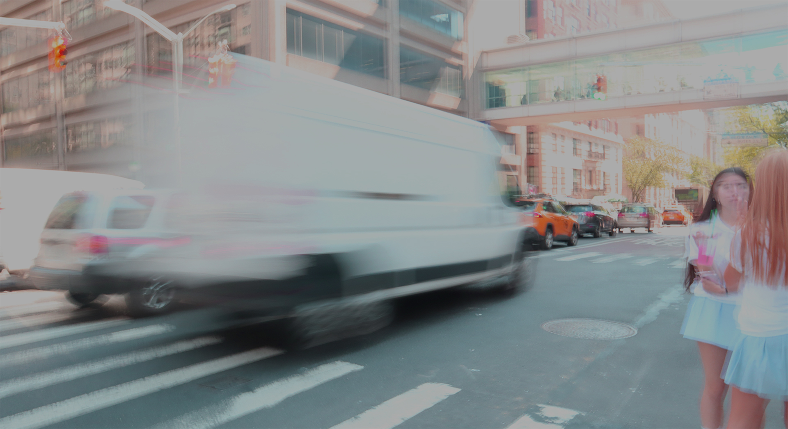

Here is the first image for Homework 2:
I took this photograph with the goal of expressing movement in the image as well. I positioned myself at a crosswalk with the camera pointed towards the road, then snapped at photograph when cars were moving parallel to the people going on the crosswalk with a low shutter speed on the dslr camera to add in a blur effect to the image for my desired movement effect. When editing in photoshop, there was excessive natural sunlight coming in form the upper right-hand side of the photograph and wanted to dim that down. Thus, I mainly used the brightness setting and turned it down. While it did lessen the sunlight from that corner, it also turned the rest of the photograph grayer. To try and combat this, I changed the hue and saturation filters of the image also well to try and offset this effect. Which made of the yellows of the image to be bolder shade of itself, being more of a red-ish yellow color instead of the typical bright yellow that a taxi or stopliht are known for. Finally, I decide to zoom in the image through cropping in from the top of the image, to try and focus in the viewers attention to the visual motion and blur of the cars and people passing by.